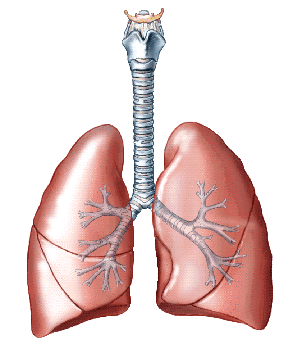

CONDITIONS
DAN AP HOME
Q&A
Cardiovascular fitness
Decompression Illness
Dental Problems
Flying after Diving
Endocrine, Blood, Liver
Nervous System
Eyes
Respiratory Conditions
Musculoskletal Injuries
Skin Problems
Medications
Psychological Issues
Women & Diving
Children & Diving
Other
Respiratory Conditions
Asthma & Diving (.pdf)
More on Asthma & Diving (.pdf)
Diving after a Pneumothorax (.pdf)
SARS (.pdf)
Scanning the Lungs after Pulmonary Baratrauma (.pdf)

From the MediClip Color Anatomy Collection,
1996, Williams & Wilkins, a Waverley Company